Getting started with epiquest
getting-started.RmdThe methodology to compute quantile epidemic state (QUEST)
thresholds was developed in 2025 at Sciensano, the Belgian
Institute for Health. While other methods for thresholds of respiratory
surveillance signals aim to classify seasonal intensity,
allowing for comparison between seasons, the QUEST thresholds were
developed to do week-to-week surveillance of the epidemiogical
situation. A central objective during development was to ensure these
thresholds were easy to interpret and directly relevant to monitoring
the burden of respiratory pathogens on the healthcare system. The
epiquest package facilitates the computation of the QUEST
thresholds.
We go through the typical steps involved in computing the thresholds here, expanding along the way in order to introduce the method. In a final section, we change the modeling parameters and recompute thresholds on a subset of the data.
Prepare data
The data need to be in a specific format in order to use the
functions in the epiquest package. The surveillance time
series needs to be stored in a data.frame with the
following columns:
- The
indexcolumn is aDateorintegercolumn. - The
ratecolumn is the count or incidence (numeric).
We will use Belgian SARI data (included in this package as
df_sari_be) in this demonstration.
head(df_sari_be)
#> index rate
#> 1 2021-06-21 4.780023
#> 2 2021-06-28 7.867652
#> 3 2021-07-05 7.190655
#> 4 2021-07-12 8.544648
#> 5 2021-07-19 2.451679
#> 6 2021-07-26 9.221645The data are plotted below. The vertical dotted line indicates the timing of a change in the surveillance system: on November 13, 2023, a new, wider SARI case definition was adopted. Because hospitals still reported whether patients satisfied the old, more narrow case definition, it was possible to investigate the relationship between the old and new case definition incidences. A linear regression model provided an excellent fit. The data before November 13, 2023, are old case definition incidences that have been transformed to the new case definition scale using this linear model. The data since November 13, 2023, are observed new case definition incidences.
ggplot(df_sari_be, aes(x = index, y = rate)) +
geom_point() + geom_line() +
geom_vline(xintercept = as.Date("2023-11-13"), linetype = "dotted", linewidth = 1) +
labs(x = "Index", y = "Rate", title = "SARI incidence in Belgium") +
scale_y_continuous(limits = c(0, NA))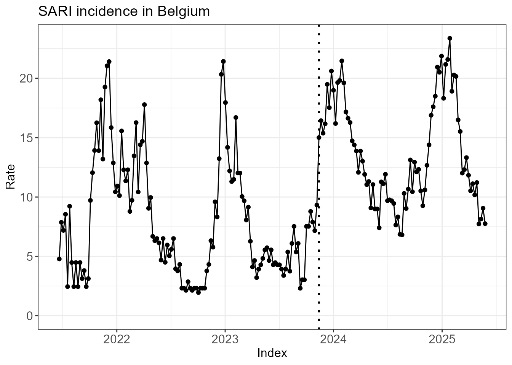
Fit hidden Markov model
Reading tip: it is not an easy task understand (or explain, for
that matter) what a hidden Markov model is. Instead of opting for a
rigorous exposition, below we gently talk through the relevant output of
the functions run_hmm() and create_hmm_plots()
in the hope that you will undestand what a HMM is by the end of this
section.
The first step is to fit a hidden Markov model (HMM) to the
surveillance time series. If we set n_states = 3, we assume
that the epidemiological situation each week is in 1 of 3 (hidden)
states. The argument type = rate indicates that our data
are incidences/counts, rather than percentages
(type = perc).
fit <- run_hmm(df_sari_be, n_states = 3, type = "rate")Before diving into the technical mechanics of the HMM, we jump ahead to the end to provide some intuition for where we are headed. The plot below shows the time series with each week colored by its most probable state. You may note that different states have different incidences. You may also note that state changes from week to week are relatively rare. In other words, the HMM identifies the hidden states by effectively clustering the data across both the time dimension and incidence dimension. By categorizing the data this way, we can use one (or more) of these hidden states as our data-driven definition of the epidemic window.
hmm_plots <- create_hmm_plots(fit)
hmm_plots$time_series_full
We dive into more details below. The summary() function
already provides an overview of the most important information of the
HMM fit.
summary(fit)
#>
#> ========================================================
#> EpiQUEST hidden Markov model summary
#> ========================================================
#>
#> --- Model configuration --------------------------------
#> Type: Continuous (Gaussian)
#> Number of states: 3
#> Seasonal: FALSE
#> Number of observations: 206
#>
#> --- Estimated state parameters -------------------------
#> State Mean Standard deviation
#> L1 4.468 1.722
#> L2 10.758 2.159
#> L3 18.011 2.641
#>
#> --- Transition matrix ----------------------------------
#> State ToL1 ToL2 ToL3
#> FromL1 95.73% 4.27% 0.00%
#> FromL2 2.51% 91.01% 6.48%
#> FromL3 0.00% 11.32% 88.68%
#>
#> --- State distribution (observations) ------------------
#> State Total weight Proportion
#> L1 72.6 35.2%
#> L2 85.2 41.4%
#> L3 48.2 23.4%
#>
#> Note: Weights are posterior probabilities.
#> ========================================================Each state has its own distribution of incidences. The function
run_hmm() assumes that each of these distributions is
normal/Gaussian if type = rate. Below you can see the
estimated mean and standard deviation of the 3 hidden states named
L1, L2 and L3. The states are
always ordered by increasing mean:
-
L1is a low activity state with mean incidence 4.47. -
L2is a medium activity state with mean incidence 10.76. -
L3is a high activity state with mean incidence 18.01.
fit$states
#> # A tibble: 3 × 3
#> state mean_state sd_state
#> <chr> <dbl> <dbl>
#> 1 L1 4.47 1.72
#> 2 L2 10.8 2.16
#> 3 L3 18.0 2.64The incidences form one important aspect of the hidden Markov model called emission. The underlying idea is that different states emit different kinds of incidences. Part of the variation in incidence throughout the year (from baseline incidences during low activity weeks to peak incidences during high activity weeks) is explained by the difference in hidden state.
A second important aspect is transition: starting
with an initial state for the first week, the HMM models the transition
of states from one week to the next. Check on the diagonal of the
transition matrix below that, for all 3 states, the probability of
staying in that state is around 90% or higher. In addition, we see that
transitions directly between the low activity state L1 and
the high activity state L3 are very unlikely. Instead, such
transition occur indirectly through the medium activity state
L2.
round(fit$transition, 2)
#> ToL1 ToL2 ToL3
#> FromL1 0.96 0.04 0.00
#> FromL2 0.03 0.91 0.06
#> FromL3 0.00 0.11 0.89As a byproduct of estimating the emission distributions and transition probabilities, the HMM provides information about the hidden state each week. There is of course uncertainty about these states, so the model provides a probability distribution1 (so-called posterior probabilities) across states rather than a single ‘hard’ classification. The time series plot below visualizes these results, with each observation colored according to its most probable state.
hmm_plots$time_series_full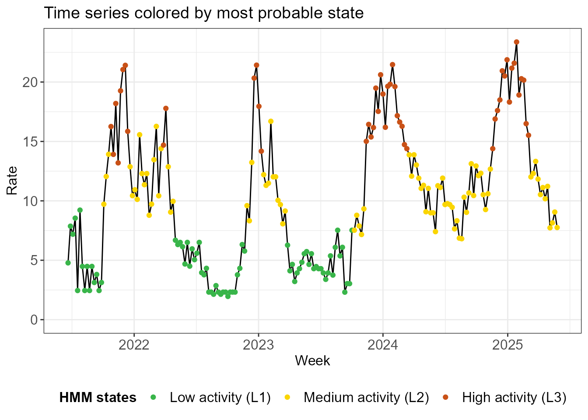
The next plots illustrate the uncertainty in the model about the state assignments. In the first one, state probabilities are plotted for each week. Note that there are blocks of time where there is no (or very little) uncertainty about the state assignment. On the other hand, we observe that uncertainty occurs when transitioning from one state to the next.
hmm_plots$prob_states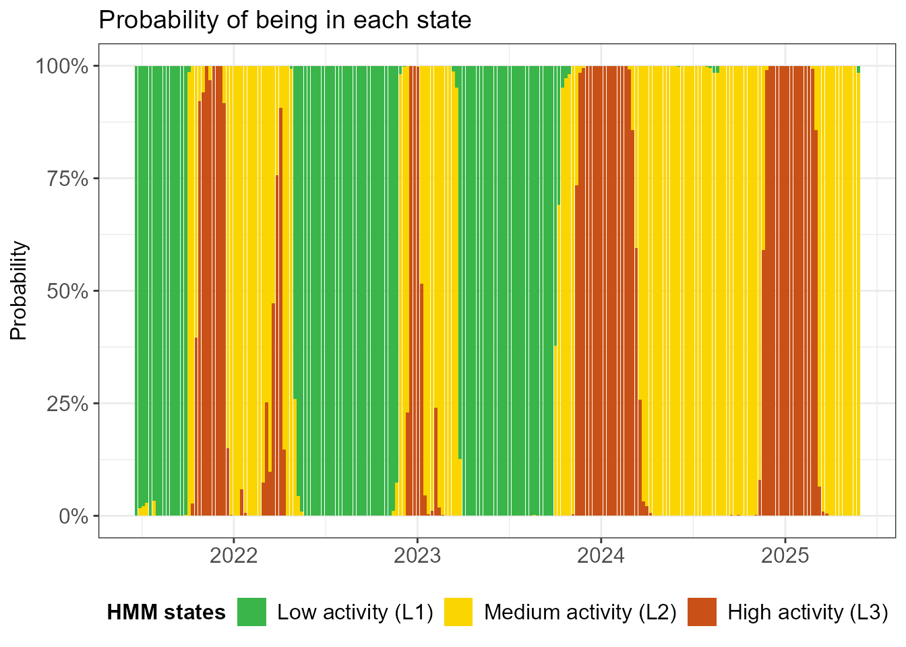
The facet plot below shows the time series 3 times, once for each
state. The observations are shaded by the probability that they are in
the state in question. An observation can appear twice in the plot: if
it has 90% probability to be in L2 (medium activity/yellow)
and 10% probability to be in L3 (high activity/red), then
it will appear almost fully in yellow in the middle facet and very
faintly in red in the top facet. Note that there are quite some shaded
observations in the high activity L3 state.
hmm_plots$time_series_per_state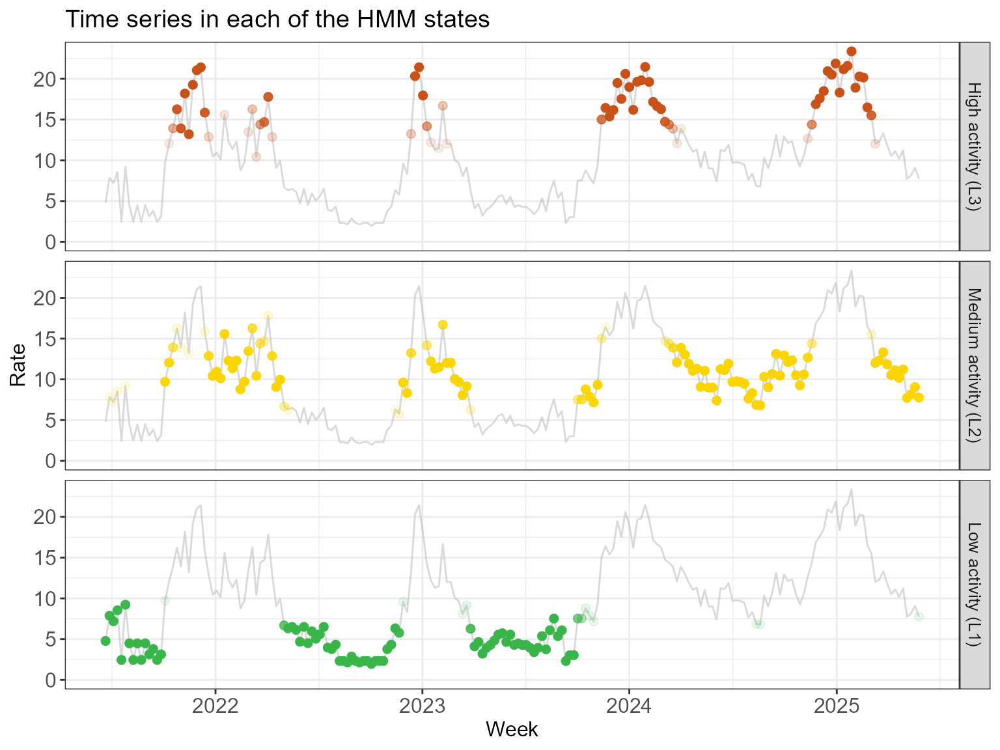
Finally, below we see a histogram of the observed incidences in each state, overlayed with the fitted normal distributions. Actually, the histogram has been weighted by the posterior probabilities - much like in the previous visualization - so an observation can contribute partially to more than one state.
hmm_plots$histogram_soft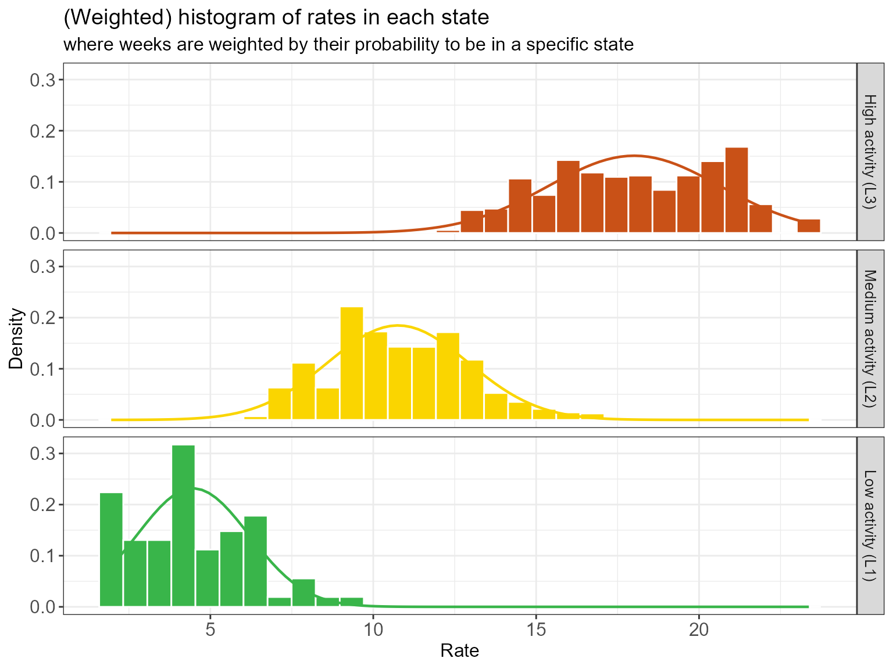
We see some overlap in the emission distribution in each state. Why
were they not separated more by the HMM? For example, would it not make
more sense to reassign some of the highest incidences observed in the
L2 state (yellow) to the L3 state (red)? While
this may seem better from an incidence perspective, reassigning those
weeks to a different state would introduce more state switching. In
balancing clustering in incidences and
clustering in time, the model allows some overlap in
indicence distributions if it avoids excessing state switching and
favors extended periods of stable state assignments.
Some last remarks concerning missing data: - The function
run_hmm() can handle missing observations; they
should not be removed from the data, but rather be left
as NA. - However, if the surveillance signal is interrupted
for extended periods (e.g., for systems that do not operate during low
intensity months), it is strongly recommended to use
seasonal = TRUE in run_hmm(). In that case,
the weeks in which no data were collected should be
removed. A grouping variable season must be included to
indicate which weeks belong to the same season. The HMM will then treat
each seasonal subseries as an independent time series.
Select epidemic state(s)
It is essential for an expert familiar with the surveillance system to review the model output and verify whether one (or more) of these states truly align with a high burden or the operational definition of an epidemic. This expert validation ensures that the statistical transitions identified by the model reflect the practical realities and pressures faced by the healthcare system, which the HMM of course cannot take into account.
In practice, a model with n_states = 2 and
n_states = 3 should be fitted and compared. The hidden
state with the highest mean incidence is the most likely candidate for
the epidemic state. We can foresee some exceptions, however: -
If the data exhibit very high peaks, the model may split (what an expert
think of as) the epidemic period into two separate states, showing a
difference between a high burden and an extremely high one. In these
cases, both of those states together might be used to define the full
epidemic. - In the same vein, if the data exhibit a single very high
(super-epidemic) peak, with smaller peaks in the other seasons,
then one of the states may capture the extreme incidence in the
super-epidemic peak. If the circumstances surrounding this peak are
thought unlikely to occur again, the super-epidemic state can be
excluded from the definition of a normal epidemic.
Compute QUEST thresholds
Once an epidemic state is identified, QUEST thresholds can be
computed using run_threshold_computation(). The default
option is that the state with the highest mean incidence is the epidemic
state. The default can be overwritten using the
epidemic_state_incidences argument (not illustrated
here).
The threshold computation is straightforward: the low, medium, high
and very high thresholds are the 5%, 70%, 90% and 99% quantile,
respectively, of the distribution of the observed incidences, weighted
by the posterior probability of being in the epidemic state. This is
exactly the distribution visualized above
(hmm_plots$histogram_soft).
Said another way:
- We simply want to define thresholds as quantiles of the observed incidences in the epidemic state.
- Since the HMM does not definitively determine which weeks are in which state, but rather uses a soft probabilistic approach, we allow for incidences to only partially contribute to the distribution of the observed incidences in the epidemic state by using posterior probabilities as weights.
thresh <- run_threshold_computation(fit)
summary(thresh)
#>
#> ==============================================================
#> EpiQUEST threshold summary
#> ==============================================================
#>
#> --- Model configuration --------------------------------------
#> Type: Continuous (Gaussian)
#> Number of states: 3
#> Seasonal: FALSE
#> Number of observations: 206
#> State(s) defined as epidemic: L3
#>
#> --- Calculated QUEST thresholds ------------------------------
#> Level Quantile Value
#> Low 5% 13.881
#> Medium 70% 19.734
#> High 90% 21.408
#> Very high 99% 22.647
#>
#> Note: Thresholds calculated using weighted ECDF
#> based on posterior probabilities of epidemic state(s).
#> ==============================================================The function create_threshold_plots() recreates the
plots we previously discussed, but with the computed thresholds added.
Below we see that the low threshold reasonably separates the medium
activity (L2) and high activity (L3) states,
except for some outliers of the L2 state.
thresh_plots <- create_threshold_plots(thresh)
thresh_plots$histogram_soft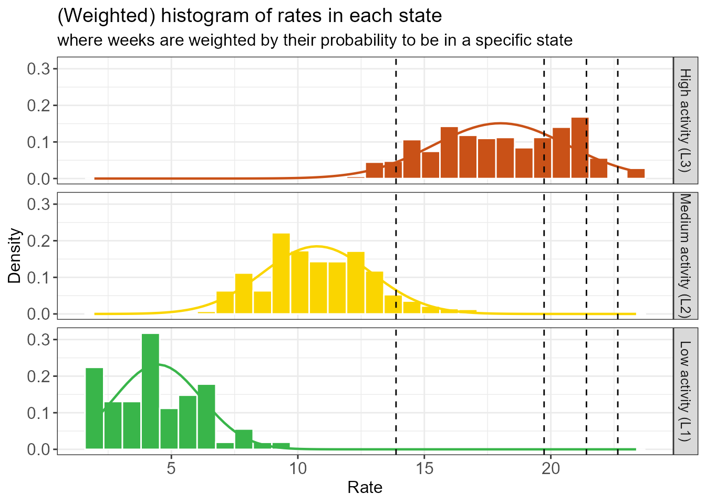
There are none of these L2 outliers in the last 2
seasons, as we can see below.
thresh_plots$time_series_full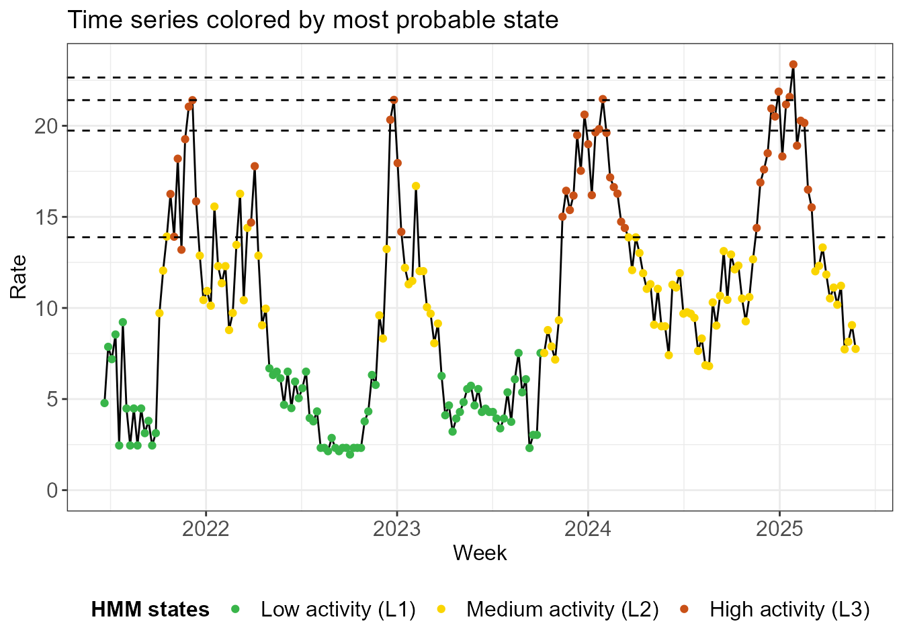
The QUEST thresholds are straightforward to interpret. Take the medium threshold as an example, which is computed as the 70% quantile of the observed epidemic state incidences. - Surpassing the medium threshold in the current week means that the incidence is in the top 30% of epidemic incidences in the historic data. - This statement begs the question what an epidemic incidence is: the definition of the epidemic is data-driven, the output of a statistical procedure that clusters in time and incidence such that epidemic weeks are part of a sustained period in which incidence is high.
The definition of epidemic incidence has a much bigger impact on the low threshold than on the other ones. The very high threshold will be heavily influenced by the highest observation, on the other hand.
Check stability
Would the thresholds meaningfully change if we had one fewer week of data? We check how stable the thresholds and the HMM states are by running the model on an increasingly large window of the data. We start with an initial window of 50 weeks and gradually at additional data one week at a time. The procedure may run for a while because…
Would the thresholds change meaningfully if the dataset were slightly different - for example, if we had one fewer week of data? We evaluate threshold and HMM stability by recomputing thresholds on an expanding window of data, starting with an initial 50-week period and adding data one week at a time.
fit_loop <- run_loop_thresholds(df_sari_be, n_states = 3)The plot below shows the evolution of the parameters of the incidence distribution (the mean and standard deviation for a normal distribution) in each state as the data window expands. We see a clear break: initially the HMM has some difficulty identifying the states, significantly changing the mean and standard deviation of the states when one week of data is added. Eventually the state assignments stabilize, changing more smoothly when new data is added.
loop_plots <- create_loop_plots(fit_loop)
loop_plots$states_facet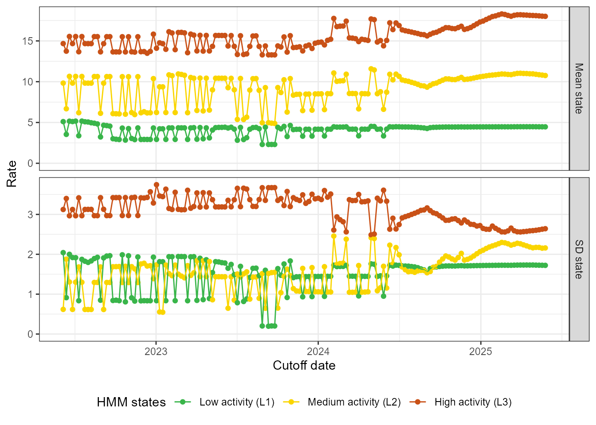
It may be easier to check the stability of the mean and standard deviation jointly. Below we plot the mean of every state, together with a dark shaded band at one standard deviation of the mean and a light shaded band at two standard deviations of the mean.
loop_plots$states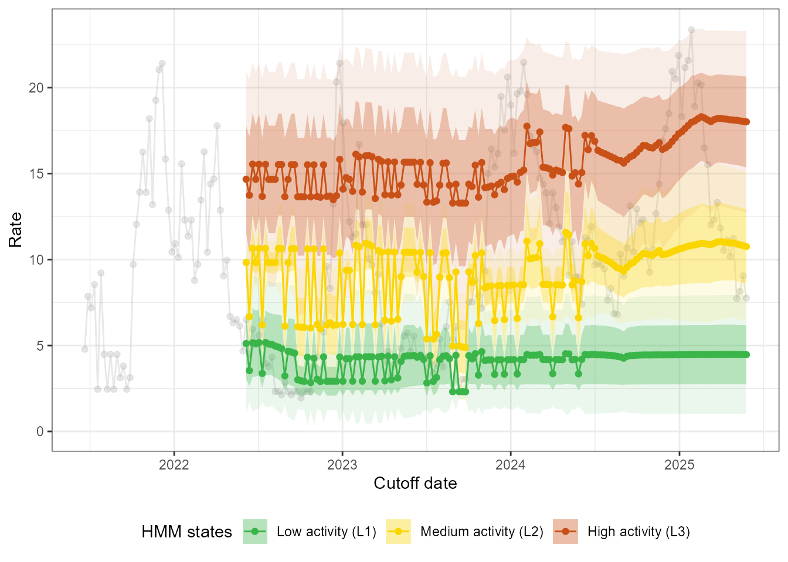
Finally, we can check the stability of the thresholds itself. We draw the same conclusions, most notably that the thresholds react relatively smoothly to the addition of new data in the last couple of months in the data.
loop_plots$thresholds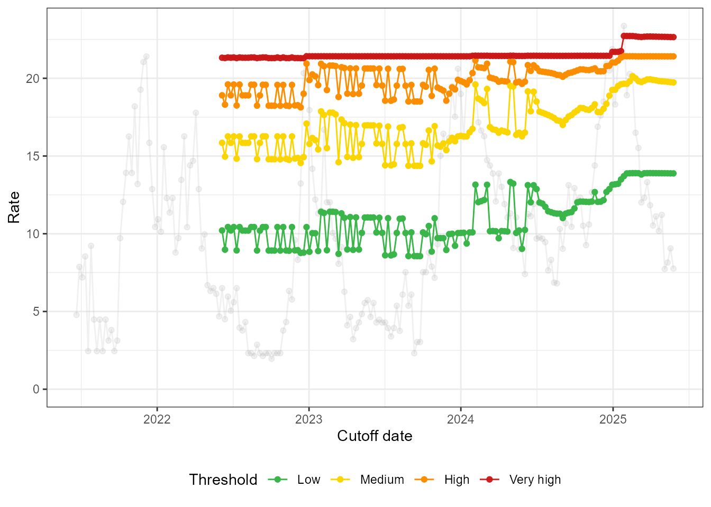
The summary() function provides information about the
thresholds and the mean of the HMM states over the past 12 iterations.
If the states and thresholds are unstable, consider changing the number
of states. If they are slightly unstable (i.e., if the fluctuations are
reasonably small), you can consider taking the median of the computed
thresholds over the last 12 iterations of the stability analysis.
summary(fit_loop)
#>
#> ========================================================
#> EpiQUEST stability analysis summary
#> ========================================================
#>
#> --- Loop configuration ---------------------------------
#> Number of iterations (refits): 156
#> Step size (increments): 7 units
#> Summary window: 12 last iterations
#>
#> --- Threshold stability (in summary window) ------------
#> type Median Mean Min Max
#> Low 13.89241 13.88527 13.81050 13.89924
#> Medium 19.81590 19.82544 19.73403 19.93247
#> High 21.41031 21.41018 21.40796 21.41212
#> Very high 22.67035 22.66909 22.64746 22.68797
#>
#> --- State mean stability (in summary window) -----------
#> state Median Mean Min Max
#> L1 4.4785 4.476667 4.468 4.482
#> L2 10.9540 10.928250 10.758 11.034
#> L3 18.1250 18.115000 18.011 18.208
#>
#> For information on standard deviation stability and
#> overlap, please look at output of create_loop_plots().
#> ========================================================Change perspective?
Recall from the data preparation step that changes were made to the
surveillance system in November 2023. You may have noticed that the low
activity L1 state is mainly used for the low season between
peaks before the change.
hmm_plots$time_series_full +
geom_vline(xintercept = as.Date("2023-11-13"), linetype = "dotted", linewidth = 1)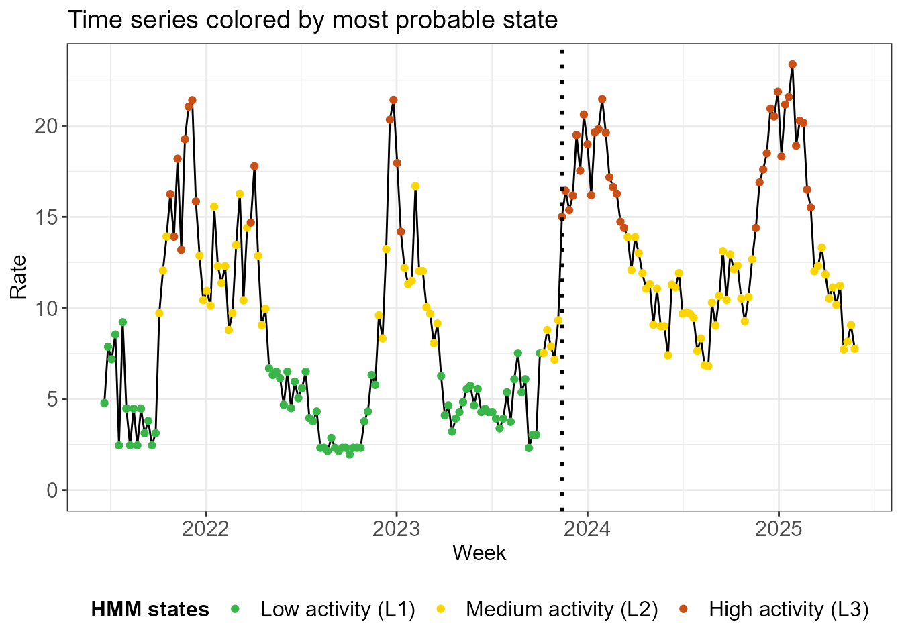
What would happen if we just used the data from after the change in a
model with 2 states? We investigate below. Note that the means of the
new L1 and L2 states are similar to the means
of the old L2 and L3 states.
df_sari_be_new <- df_sari_be %>%
filter(index >= as.Date("2023-11-13"))
fit_new <- run_hmm(df_sari_be_new, n_states = 2)
summary(fit_new)
#>
#> ========================================================
#> EpiQUEST hidden Markov model summary
#> ========================================================
#>
#> --- Model configuration --------------------------------
#> Type: Continuous (Gaussian)
#> Number of states: 2
#> Seasonal: FALSE
#> Number of observations: 81
#>
#> --- Estimated state parameters -------------------------
#> State Mean Standard deviation
#> L1 10.582 1.922
#> L2 18.359 2.395
#>
#> --- Transition matrix ----------------------------------
#> State ToL1 ToL2
#> FromL1 97.85% 2.15%
#> FromL2 6.01% 93.99%
#>
#> --- State distribution (observations) ------------------
#> State Total weight Proportion
#> L1 47.7 58.8%
#> L2 33.3 41.2%
#>
#> Note: Weights are posterior probabilities.
#> ========================================================In terms of most probable states, the classification is identical to the old one.
hmm_plots_new <- create_hmm_plots(fit_new)
hmm_plots_new$time_series_full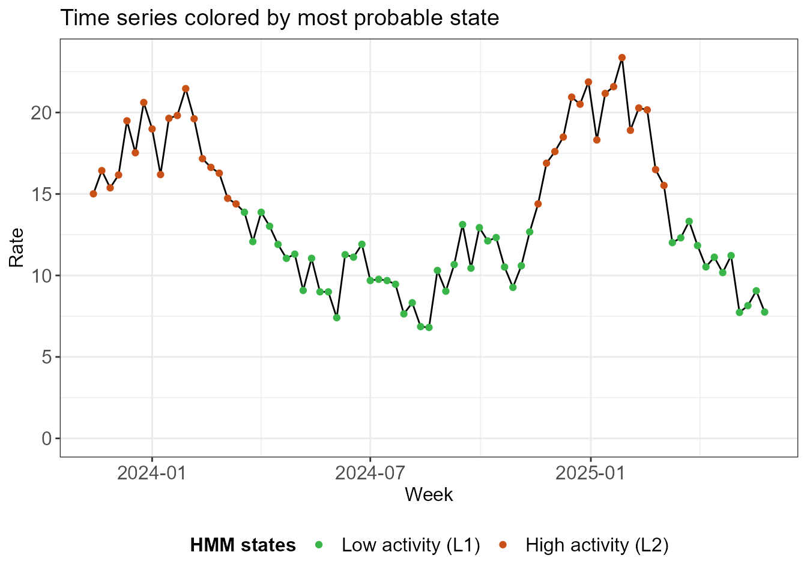
The thresholds are comparable between the methods, with the biggest impact on the low threshold.
thresh_new <- run_threshold_computation(fit_new)
tibble(
Threshold = c("Low", "Medium", "High", "Very high"),
Old = thresh$threshold,
New = thresh_new$thresholds
)
#> # A tibble: 4 × 3
#> Threshold Old New
#> <chr> <dbl> <dbl>
#> 1 Low 13.9 14.4
#> 2 Medium 19.7 19.8
#> 3 High 21.4 21.4
#> 4 Very high 22.6 22.9The 2-state model on the recent data is much more stable, as we see below.
fit_loop_new <- run_loop_thresholds(df_sari_be_new, n_states = 2)
loop_plots_new <- create_loop_plots(fit_loop_new)
loop_plots_new$thresholds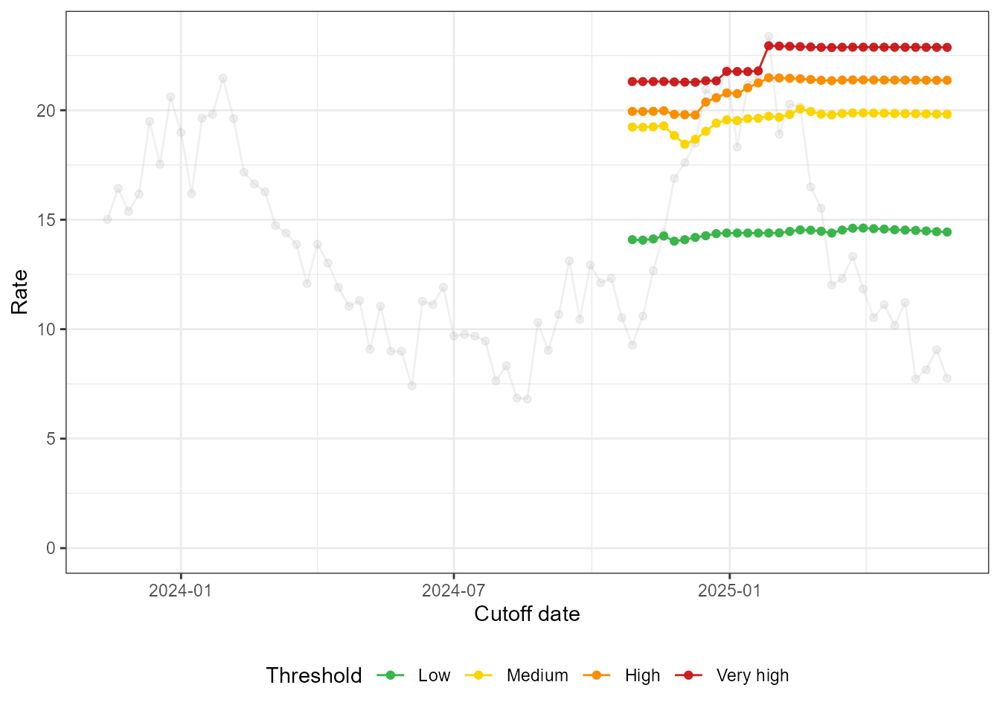
loop_plots_new$states_facet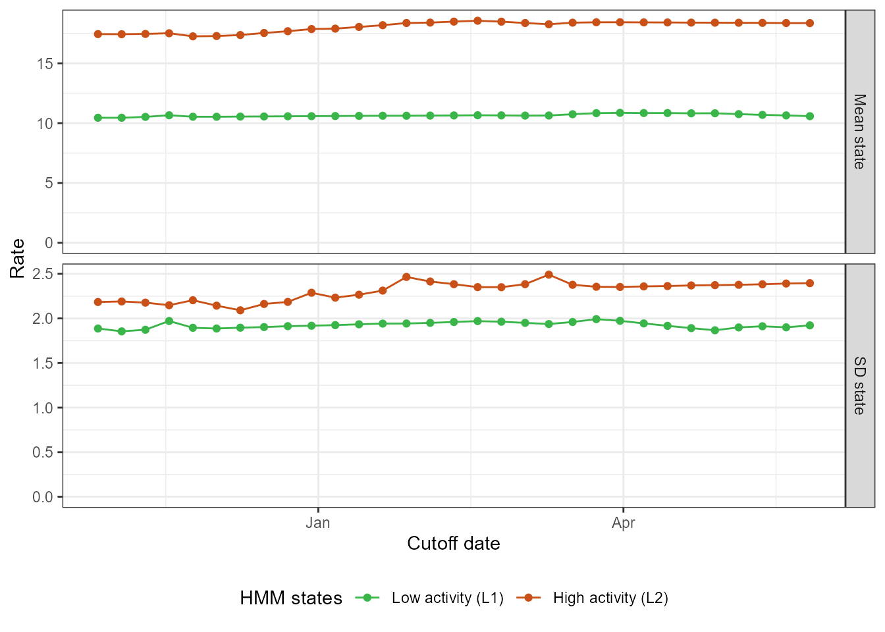
The exercise we did here shows that the QUEST thresholds, despite their data-driven definition of the epidemic, can produce stable results, even with only two (incomplete) seasons of data.